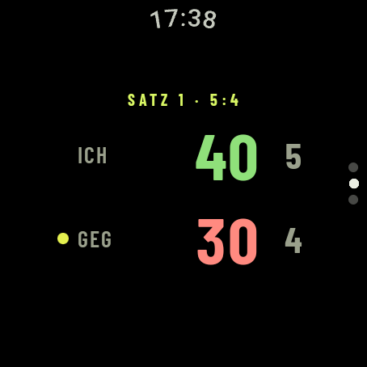
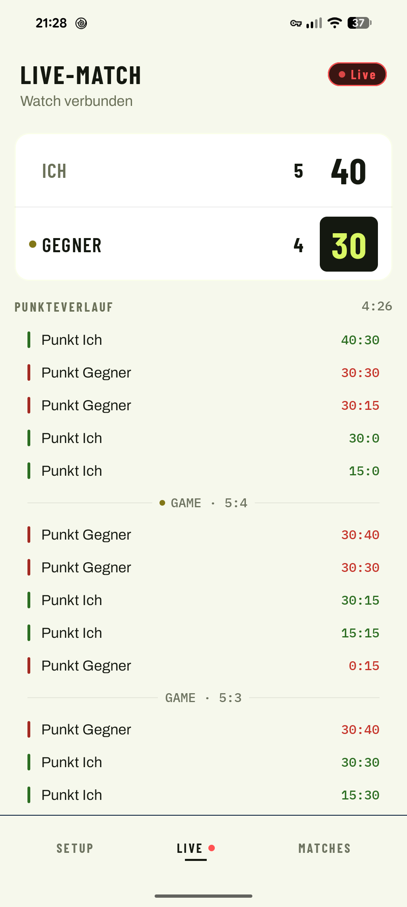
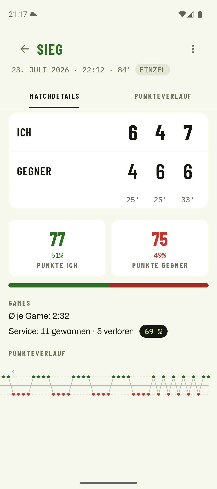

Tennis zählen am Handgelenk. Ein Tipp pro Punkt, kein Zettel, keine Diskussion. Ein Link genügt, und Freunde verfolgen den Stand live im Browser oder in der App. Danach jede Statistik, die du willst.
Am Handgelenk
Kein Handy aus der Tasche, kein Blick weg vom Ball. Die Uhr zeigt Satz, Games und Punkte im Always-On, auch zwischen den Ballwechseln.

01 Während des Matches
Aufschlag. Die Uhr ist bereit, du musst nur noch spielen.
02 Auf dem gekoppelten Handy
Die Uhr zählt, dein eigenes gekoppeltes Handy zeigt mit. Über Bluetooth, ohne Internet. Perfekt, wenn am Zaun jemand mitschaut.

03 Für alle anderen
Vom Handy aus teilst du das laufende Match als Link. Familie und Freunde verfolgen den Spielstand in Echtzeit im Browser oder in der App, Punkt für Punkt. Ganz ohne eigenes Konto.

04 Nach dem Match
Jeder Punkt wird als Ereignis mitgeschrieben. Daraus wird mehr als ein Endergebnis: Breakbälle, Satz- und Matchbälle, Einstand-Games, längste Punkteserie – die Punkte, an denen das Match entschieden wurde.
Über allen Matches gibt es die Gesamtstatistik: Siegquote, Form der letzten zehn Matches, Siegquoten-Trend, Bilanz nach Wochentag und Tageszeit – Einzel und Doppel getrennt.
05 Was die App kostet
Kortscore verkauft weder deine Aufmerksamkeit noch deine Matches. Es gibt genau ein Upgrade, und das kaufst du einmal – oder eben nie.
Werbefrei
Kein Banner.
Kein Werbe-SDK.
In der App steckt kein Werbenetzwerk – nicht in der Gratis-Version und nicht sonst irgendwo. Nichts blinkt zwischen zwei Ballwechseln, nichts schiebt sich vor den Punktestand. Das gilt für alle, nicht nur für Käufer.
Kortscore Plus
Einmal kaufen.
Kein Abo.
Ein Kauf, keine Laufzeit, keine monatliche Abbuchung. Er gilt dauerhaft, und nach einer Neuinstallation stellt ihn die App still wieder her. Drei Dinge schaltet er frei:
Frei bleibt
Zwei Grundsätze dahinter: Das Ergebnis deines eigenen Matches verkaufen wir dir nicht zurück. Und dich vor Datenverlust zu schützen, kostet nie Geld – manuelles Backup bleibt frei. Plus kauft nur die Bequemlichkeit, dass es von allein passiert.
06 Datenschutz
Geschlossene Testphase
Wir suchen Spielerinnen und Spieler mit Wear-OS-Uhr, die Kortscore auf dem Platz testen. Schick uns die E-Mail deines Google-Kontos. Nur damit kann Google dich freischalten. Deine Freunde und deine Familie brauchen keine Uhr und keine App – zum Zuschauen genügt der Link im Browser.
Öffnet dein Mailprogramm mit vorbereitetem Text. Klappt das nicht: swordistudios@gmail.com